Pour plus d'information, vous pouvez aller sur UltimateFrameData. Touts les gifs viennent de là. Pour apprendre à lire une frame date vous pouvez voir la vidéo du PDE.
Hitbox
Jab 1
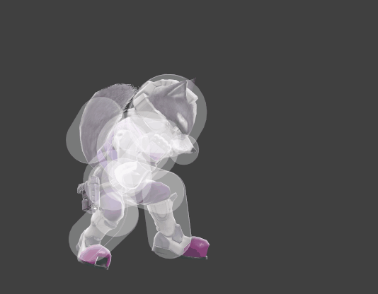Ce coup sort très vite (frame 2) et permet donc de repousser rapidement un adversaire. Il faut cependant faire attention car il a pas mal de lag !
Jab 2
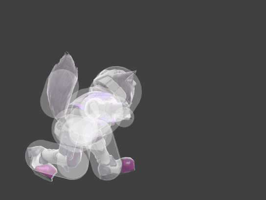Il faut vous arrêter là si vous voulez juste Jablock. Si vous continuez le coup Fox fera un rapid jab (en dessous) et permettra de faire pas mal de dégâts !
Rapide Jab
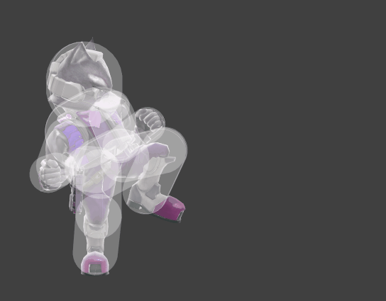Si vous touchez l'adversaire avec ne le faite pas trop longtemps car il pourra en sortir. S’il shield, essayez de le continuer un peu pour le pousser le plus possible et minimiser les chances de se faire punir (vous prendrez quand même sûrement un coup). Il peut par contre roll à partir de 11 coups sur son shield. S’il roll in, il a de grandes chances de se prendre votre jab et alors faîtes vous plaisir. S’il part, arrêtez-vous vite pour éviter de vous faire punir trop violemment. Il peut arriver de temps en temps que le move agisse comme ici. C'est parce que l'adversaire est pris pile dans les bonnes hitbox. Profitez en donc pour lui mettre un maximum de pourcentages !
Uptilt
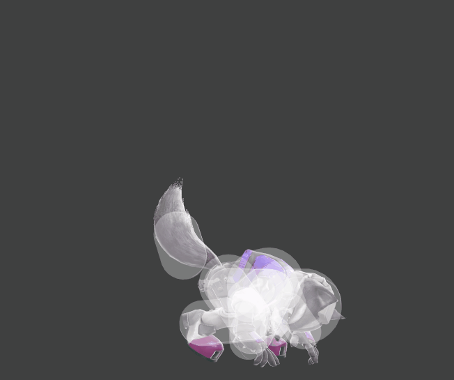Très pratique pour anti-air et commencer à combo ! Ce coup sort très rapidement (frame 3) et est très utile. Il existe cependant une mauvaise habitude assez présente qui est de le bourrer sur le shield après un Bair ou un Nair qui ne touche pas. Il faut éviter car ça fait passer d'un move qui est à -4 on shield à un move qui en a -18 on shield
Down Tilt
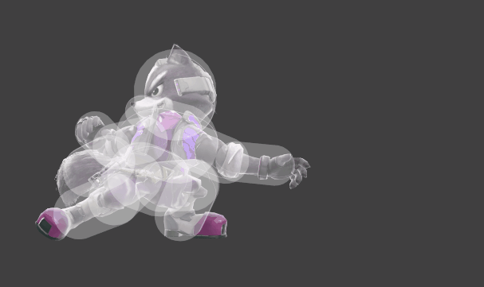Très solide combo starter. Il permet d'enchainer avec un Fair, un Dair, un Bair en attack cancel pour maximiser les chances d'être true et même parfois avec un Upair
Dash Attack
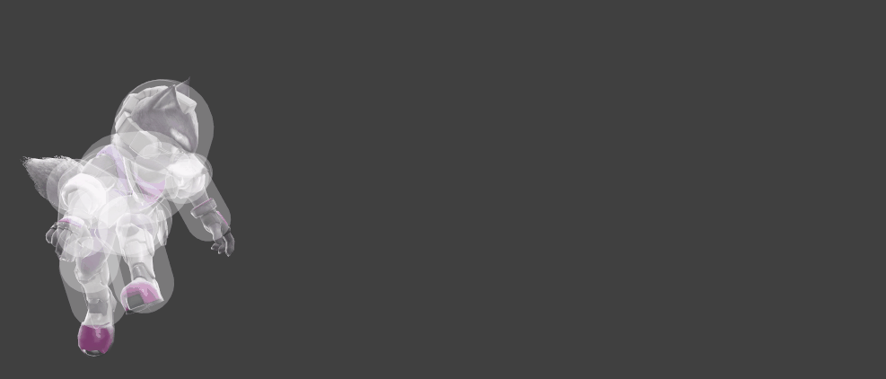Pratique pour wiff punish, cette attaque permet de combos sur un uptilt par exemple à bas % et un Upair quand la stock est un peu plus entamée. Si vous touchez les derniers hits vous pouvez combo avec presque tout y compris un bon Upsmash !
Forward Smash
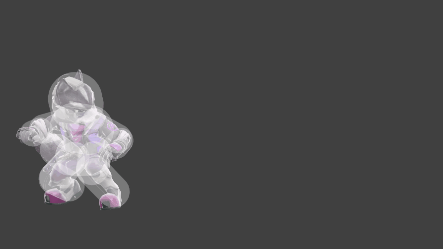Permet de couvrir une bonne distance au sol et tue sur le côté. Il peut être pratique en edgetrap mais est à -22 on shield donc attention à son utilisation !
Up Smash
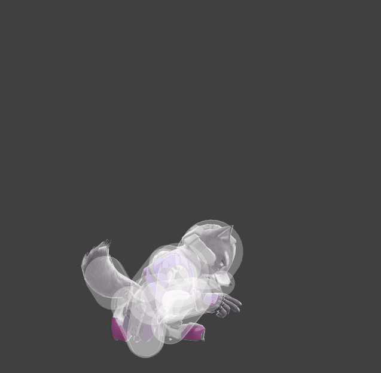Très bon oos (frame 8) et tue très tôt. Permet de terminer un grand nombre de kill confirm et est redouté par beaucoup. Attention cependant à ne pas en abuser car il a énormément de lag (-36 on shield)
Down Smash
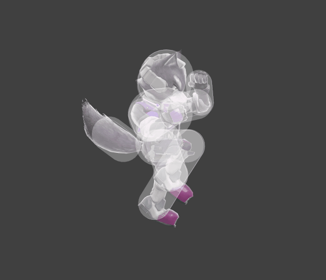Il peut permettre de 2 frame mais a du lag donc c'est à ses risques et périls. Il est cependant très bon en techchase et est le smash sortant le plus vite de Fox (frame 6) en gardant le même lag que le Upsmash
Neutral Air
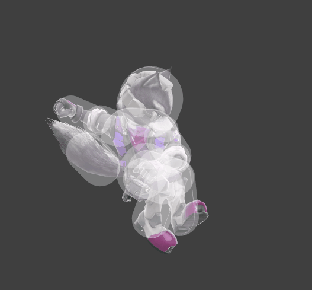Un des meilleurs coups de Fox ! Il est safe (-4 on shield), dure longtemps, sort vite (frame 4), peut se space, permet de combos comme par exemple avec la DashAttack et permet aussi de prendre la stock avec le très connu Nair>Upsmash mais aussi avec le Nair>Dair>Upsmash !
Forward Air
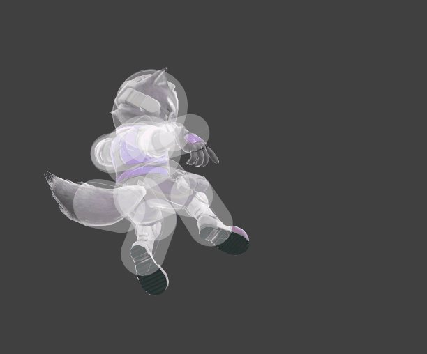Bon multihit qui peut être utilisé en tant que ledge drop attack. Une bonne attaque pour combo surtout face aux adversaires ne sachant pas tech car si on le dragdown, il permet de mettre en techchase, un des atouts forts de Fox ! Il peut aussi être utile en edgetrap pour Fair DragDown>Footstool
Back Air
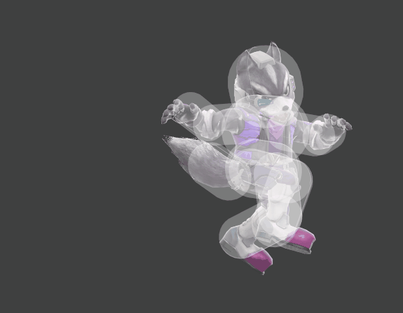Très bon coup aussi. Il sort vite (frame 9), est safe (-4 on shield), peut bien se space, permet de finir des combos et il est très utile en edgetrap ! Il prend malheureusement la stock un peu tard
Up Air
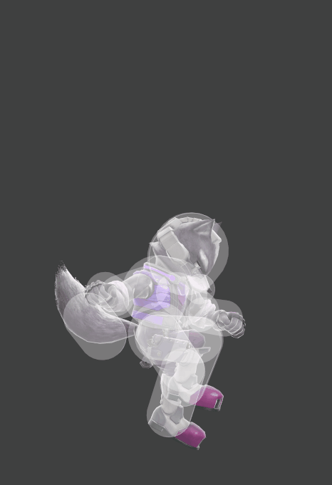Très bon outil de juggle pour Fox. Il permet d'enchainer son adversaire en l'air assez longtemps. En plus de ça le coup est a peu de frames de lag (-9 on shield) et permet de finir l'adversaire assez rapidement ! Il peut aussi combo si on touche seulement le 1er hit notament en suivant avec un Upsmash ou DownSmash
Down Air
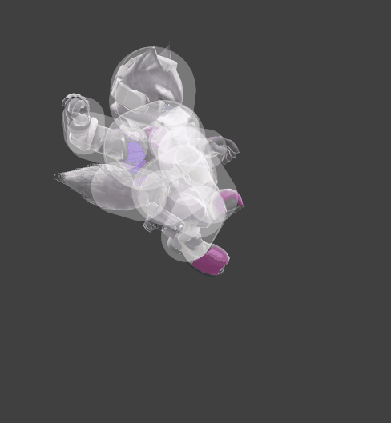Encore un bon outil à l'arsenal de Fox ! En plus d'être un multihit donc toujours pratique contre les gens amoureux du parry, ce coup permet de super bien combo et on peut tuer assez vite grâce au kill confirm Dair>Upsmash ! Il a été Fix récement et on peut donc s'attendre à de beaux setups. Il sort aussi très vite (frame 5)
Neutral B
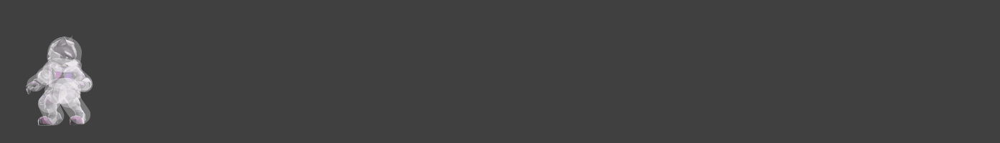Ce coup est pratique en neutral pour motiver l'adversaire à bouger en esperant qu'il commit. Malheureusement au contraire de Falco il ne provoque pas de hitstunt et donc l'adversaire peut nous foncer dessus tranquillement pendant qu'on le mitraille. Il est donc conseillé de tirer les coups seulement deux par deux voir un par un contre des adversaires rapides comme Little Mac ou Sonic
Side B
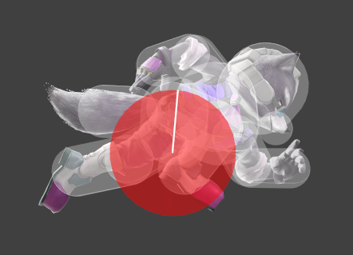Le sideB est un peu trop utilisé en online notamment parce que c'est plus complexe de réagir mais a un gros défaut. La hitbox est plus petite que la hurtbox ce qui fait que n’importe quel coup peut vous toucher et donc potentiellement vous tuer. Il permet de combo notamment avec un Upair (Pythagore) ou un Upsmash si l'adversaire se fait toucher en l'air
Down B
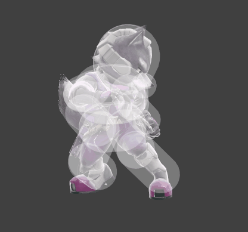Le Shine ! Alors il a bien changé depuis Melee mais reste quand même bien utile ! Déjà il renvoie les projectiles (logique) ce qui aide bien dans pas mal de MU. Ensuite, vous pouvez vous retourner autant de fois que vous voulez dans ce coup ce qui permet certains mouvements dans les airs. Et surtout il peut se cancel ! Si vous orientez votre stick directionnel pendant qu'un projectile se fait shine, vous pouvez roll ou spotdodge. Vous pouvez également jump en appuyant sur le bouton qui lui est attribué ! Le shine permet également de mettre en situation de techchase mais a pas mal de lag. C'est vraiment pour le style et si l'adversaire ne sait pas tech je pense mais c'est toujours cool
Grab
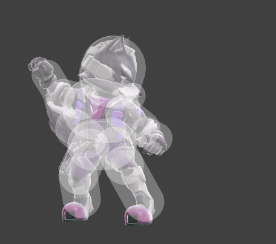Comme vous pouvez le voir, le grab de Fox ne va pas très loin. Et encore ce n'est que le début, le grab game de Fox est vraiment très mauvais. Il faut néanmoins penser à grab souvent pour conditionner l'adversaire au risque qu'il passe sa vie en shield et que vous soyez dans l'impossibilité de le tuer
Dash Grab
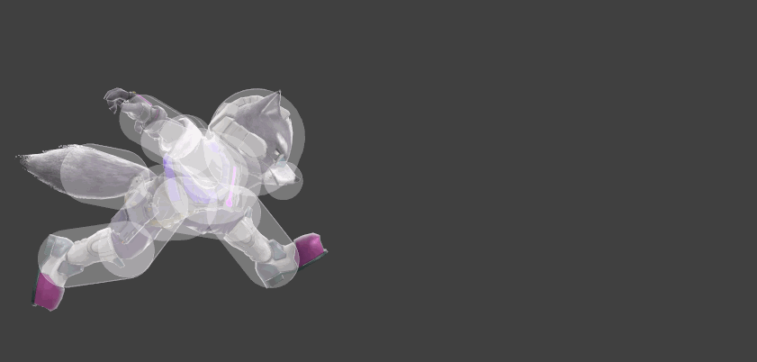Il ne va même pas jusqu'au bout de sa main. Essayez d'utiliser au autre grab si possible
Pivot Grab
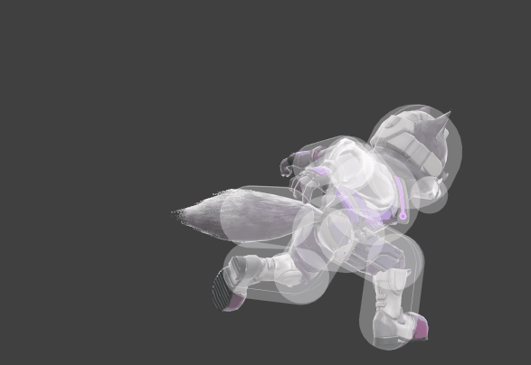Un peu plus grand mais bon. Pas grand-chose à dire dessus
Pummel
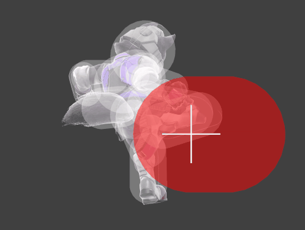Certains peuvent penser que vu les throws de Fox il est limite plus rentable de juste pummel pour mettre des dégâts jusqu'à ce que l'adversaire ait assez mash pour s'en sortir. Mais c'est faux, même si les throws de Fox sont vraiment mauvaises, elles permettent de bien se positionner et aussi font souvent plus de dégâts que juste pummel.
Forward Throw
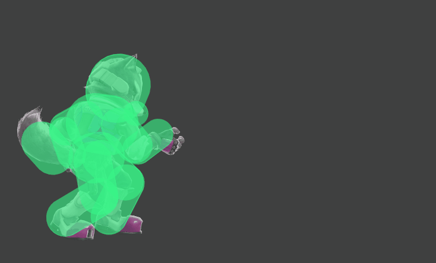Cette throw permet de mettre l'adversaire pas si loin de soi en plus de parfois mener à une techchase. Elle peut être utile à bas % notamment quand la Upthrow n'envoie pas assez haut.
Back Throw
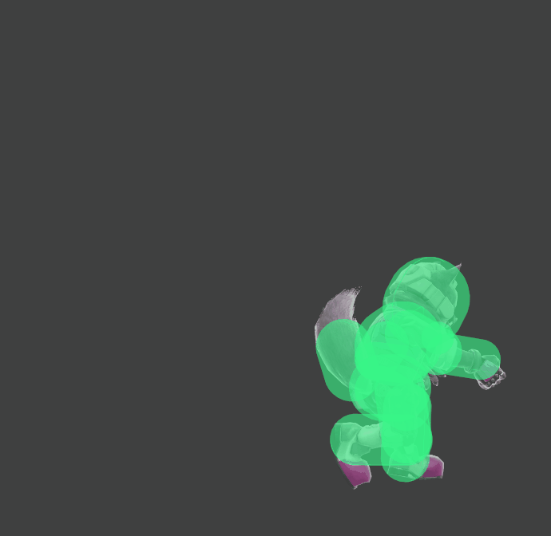Est utile pour mettre offstage mais elle envoie vraiment pas loin
Up Throw
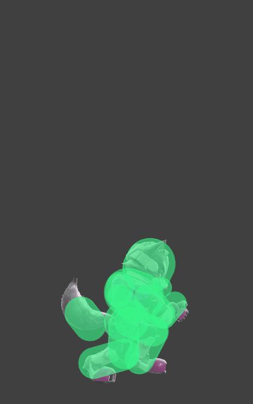Peut mettre l'adversaire en gros désavantage car au-dessus de vous mais à bas % vous pouvez généralement à peine bouger que le perso en face retombe déjà. Attendez d'avoir un peu plus entamé la stock pour l'utiliser
Down Throw
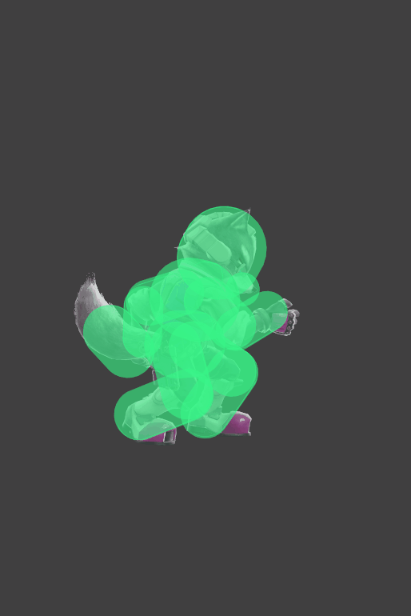La seule qui laisse Fox invincible pendant qu'il tire ses lasers ce qui est pratique dans le MU Héro. Permet d'avoir l'adversaire dans un bon angle pour commencer ou continuer sa phase d'avantage
Ledge Grab
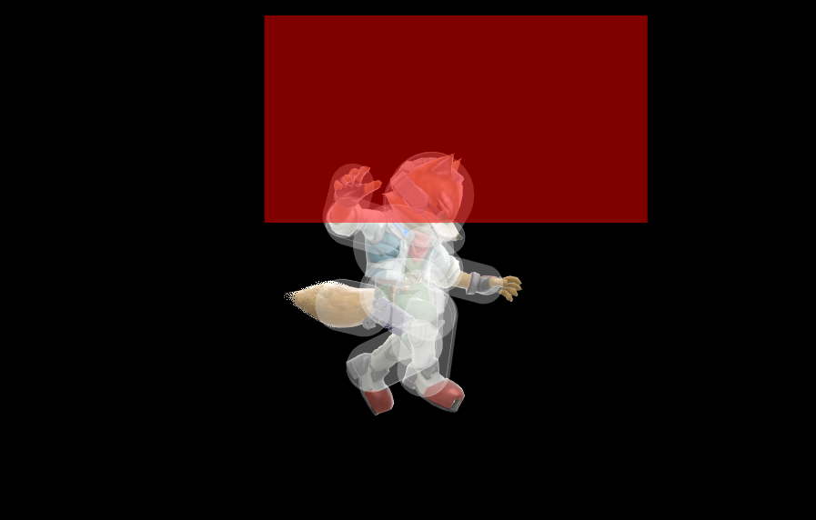Vous pouvez voir que Fox attrape plus facilement l'edge si vous le regardez. Sa range est assez grande donc profitez-en !
Ledge Grab après avoir SideB
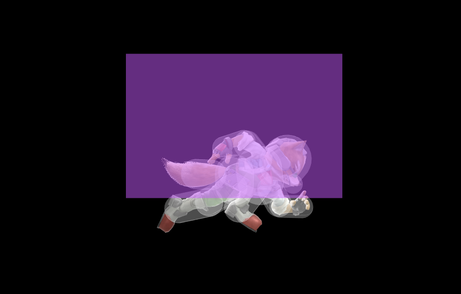N'hésitez pas à reco avec le sideB le plus bas possible pour quand même pouvoir grab l'edge. Cela vous évitera de vous faire taper trop facilement
Ledge Grab après avoir UpB
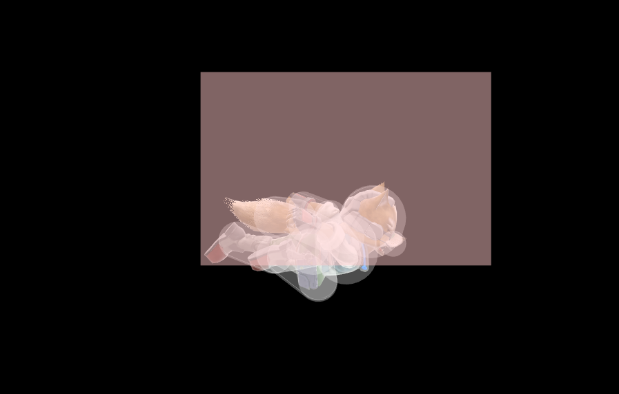Approximativement la même que pour le SideB donc vraiment profitez bien de l'aimant. C'est presque comme un short hop en plus